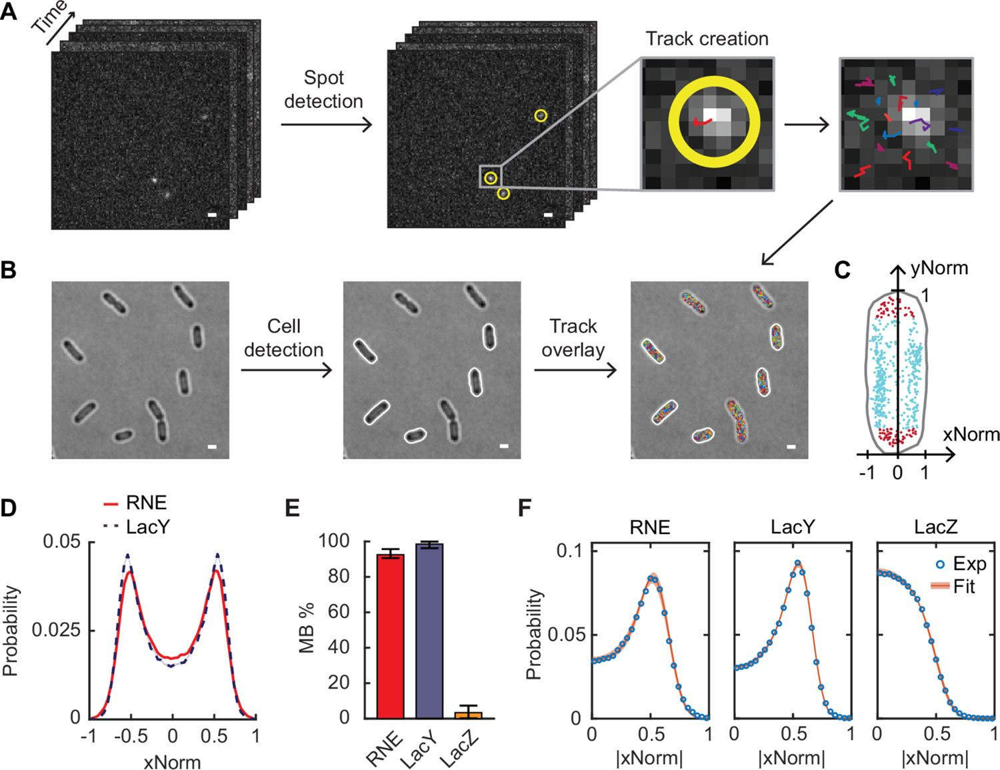
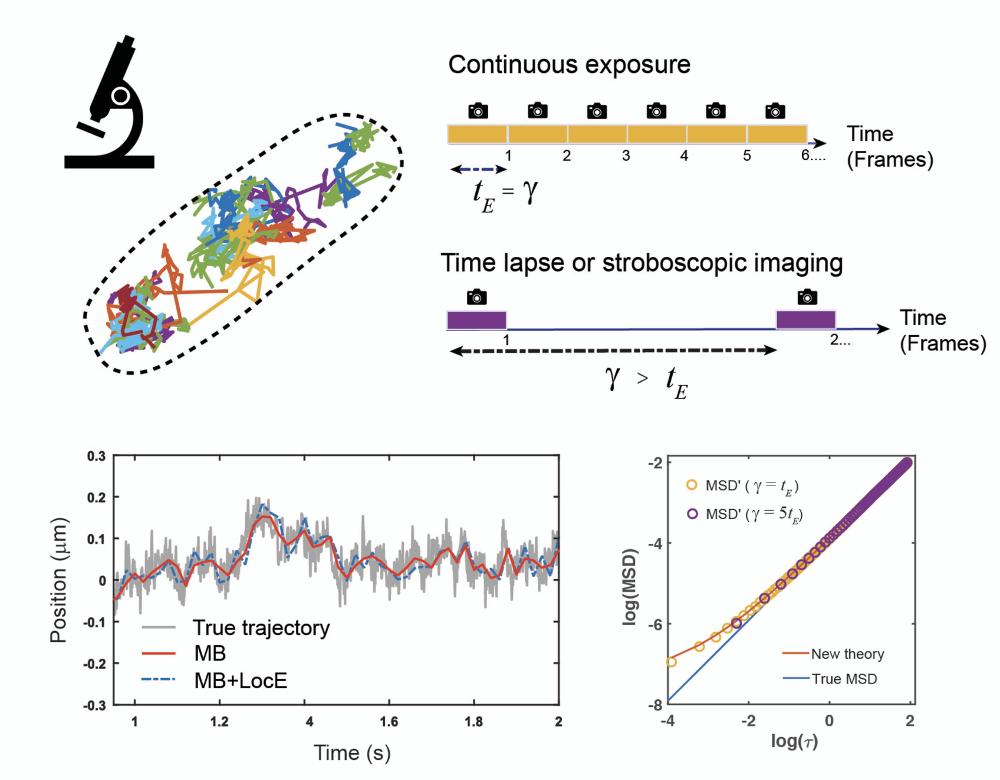
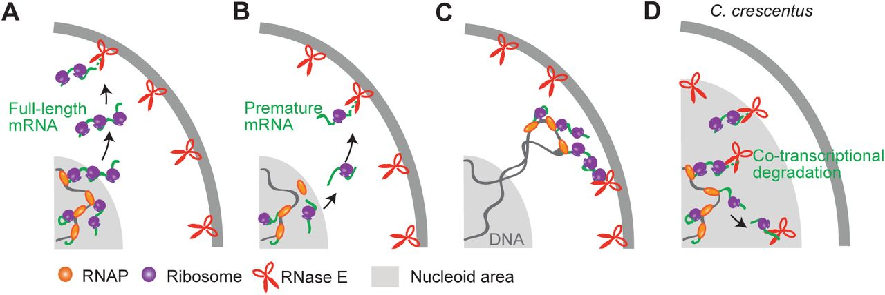

Yu-Huan Wang
University of Illinois Urbana-Champaign
About Me
Hi, I’m a Ph.D. candidate in Physics at the University of Illinois Urbana-Champaign, working with Prof. Sangjin Kim. My research focuses on exploring the spatiotemporal dynamics of DNA loci and proteins in living bacterial cells using single-particle tracking and super-resolution imaging. Learn more about our work at the Kim Lab Website.
Research Interests
- Single-Molecule Biophysics
- Super-Resolution Fluorescence Microscopy
- Chromosome Organization and Dynamics
News
- [Nov. 2025] I was selected as a recepient of 2026 BPS Graduate Travel Award.
- [Nov. 2025] Our paper about RNase E was published on eLife!
- [Oct. 2025] Our paper about MSD fitting was published on JCP!
- [July. 2025] I gave an oral presentation on loci dynamics at the NSF iPoLS annual meeting.
- [May. 2025] I was selected as a Mavis Future Faculty Fellow for 2025-2026.
- [April. 2025] I was awarded the geed grant from QCB.
- [Nov. 2024] I passed the preliminary exam of the Physics PhD program. Let’s go~
Publications
-

eLife -

JCPJournal of Chemical Physics (JCP), 2025. -

bioRxiv
Education
- University of Illinois Urbana-Champaign [2020–Present]
PhD in Physics
- Southern University of Science and Technology [2016–2020]
BS in Physics
- University of California, Berkeley [2019.01–2019.08]
Visiting Student
Honors and Awards
- BPS Graduate Travel Award (Biophysical Society, 2026)
- Mavis Future Faculty Fellows (UIUC, 2025-2026)
- NSF Center for Quantitative Cell Biology seed grant (2025)
- “People’s choice” Poster Award (Illinois Biophysics, 2024)
- Outstanding Graduate Award (SUSTech, 2020)
- Excellent Undergraduate Thesis Award (SUSTech, 2020)
- Full Scholarship for Study Abroad (SUSTech, 2019)
- Climbing Research Grant (Guangdong Province, China, 2019)
- Full Scholarship for Academic Excellence (SUSTech, 2017-2020)